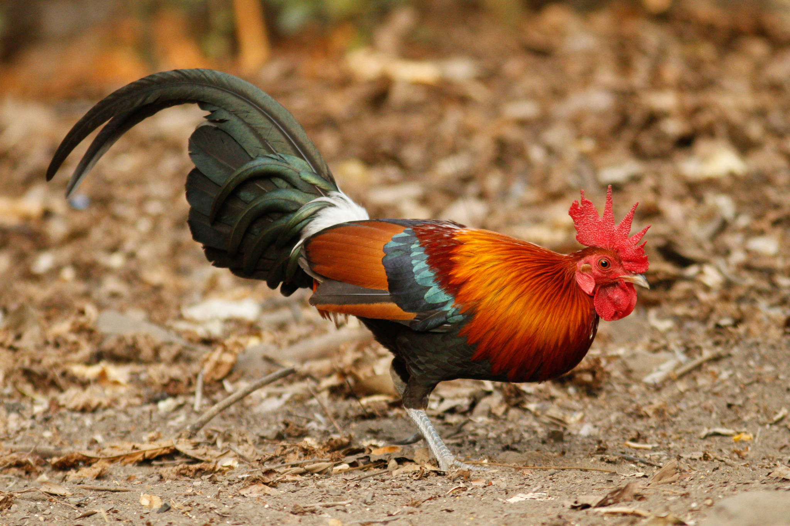

Status: Endangered
Overview: The Sri Lankan elephant is a subspecies of the Asian elephant
and is one of the three recognized subspecies in Sri Lanka. These
elephants are highly revered in the country and can be found in various
habitats, including national parks and protected areas like Udawalawe
and Minneriya.
Status: Endangered
Overview: The Sri Lankan leopard is the island's top predator and is
known for its striking spotted coat. Yala National Park is particularly
famous for leopard sightings. Conservation efforts are in place to
protect this endangered species and its habitat.
Status: Endangered
Overview: Endemic to Sri Lanka, the purple-faced langur is a leaf-eating
monkey found in the island's montane forests. It is recognized by its
distinctive purple face, and conservation efforts are ongoing to protect
its diminishing habitat.

Status: Least Concern
Overview: The Sri Lanka Junglefowl is the national bird and is endemic
to the island. Males exhibit vibrant plumage, making them easily
identifiable. They inhabit various forested areas and are culturally
significant in Sri Lanka.

Status: Near Threatened
Overview: The toque macaque is an endemic monkey species with a unique
tuft of hair on its head. It adapts well to different environments, from
forests to urban areas. However, habitat loss and human-wildlife
conflict pose threats to its population.
Status: Near Threatened
Overview: The rusty-spotted cat is the smallest wild cat in Sri Lanka
and is found in dense vegetation. Its small size and elusive nature make
it a challenging species to study. Conservation efforts focus on
protecting its habitats.
Status: Near Threatened
Overview: This unique lizard, endemic to Sri Lanka, is characterized by
a distinctive hump on its nose. It inhabits the central and southwestern
regions and faces threats from habitat loss and collection for the pet
trade.
Status: Near Threatened Overview: Endemic to the wet zone forests of Sri
Lanka, this large and colorful pigeon species faces habitat degradation
due to deforestation. Conservation measures aim to preserve its unique
habitat.